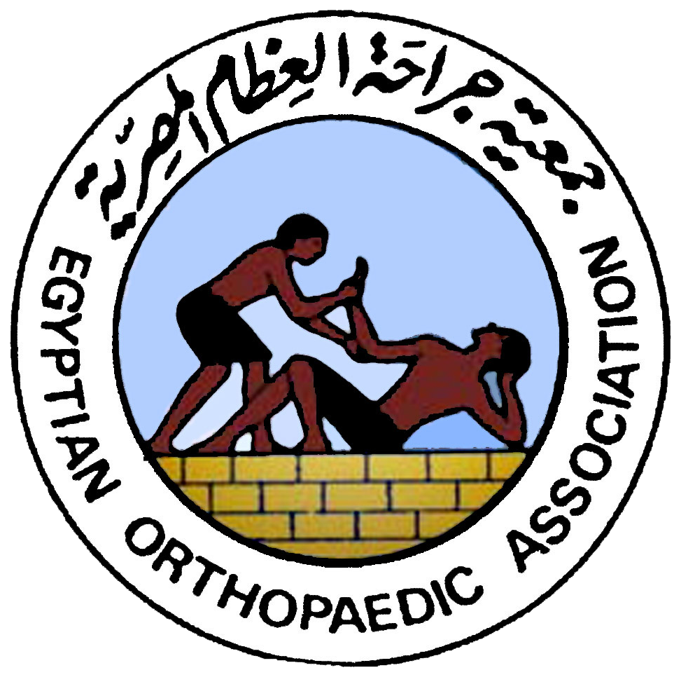
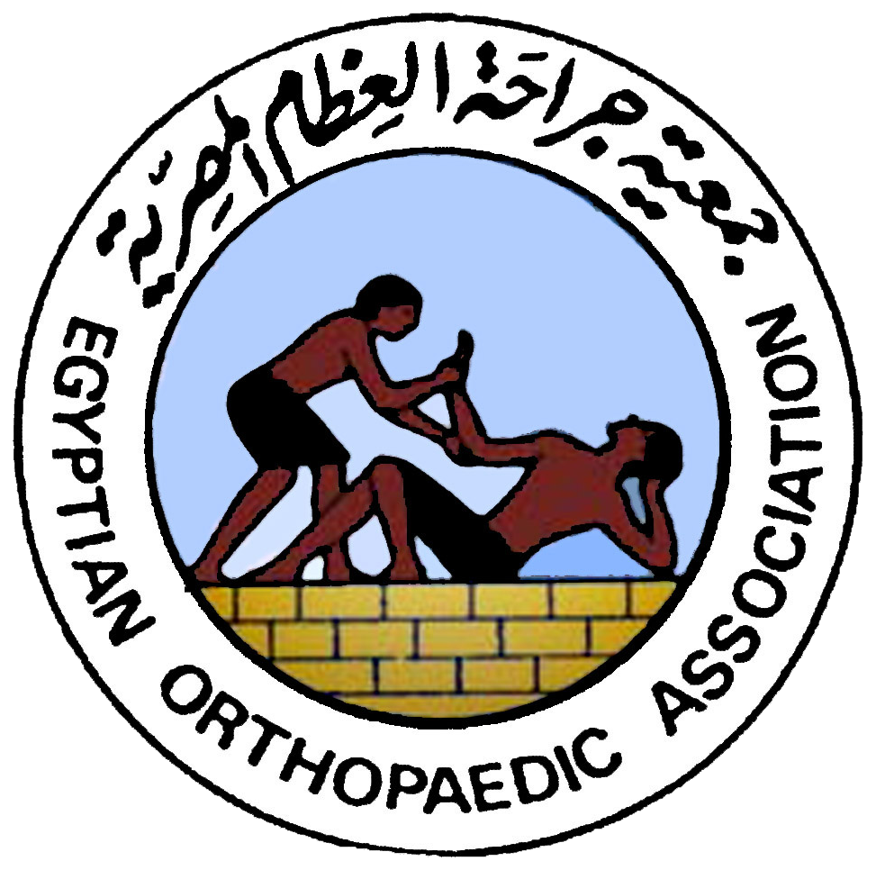

كلمة ترحيب
مرحبا بكم في الموقع الإلكتروني للأستاذ الدكتور/ جمال احمد حسني
الأستاذ الدكتور/ جمال احمد حسني هو:
- رئيس قسم العظام بكليه طب بنها.
- أستاذ جراحة العظام بكلية طب بنها – ورائد جراحات التطويل واصلاح التشوهات بواسطة الأليزاروف في مصر والشرق الأوسط وعضو جمعية جراحة عظام الأطفال الأوربية وعضو جمعية الدولية لجراحة العظام SICOT الدولية والرئيس السابق لجمعية جراحة العظام المصرية .
- مؤسس ورئيس قسم التطويل واصلاح تشوهات العظام سابقا في مستشفي الهرم وله العديد من الأبحاث والمنشورات العلمية في الدوريات الطبية العالمية.
ويظهر في هذا الموقع وجهات النظر في إصلاح العيوب الخلقية الشديدة مثل غياب العظام وعلاجها بطرق مبتكره وحديثة تختلف تماما عن الأسلوب الغربي والذي يؤيد البتر للجزء المصاب كما يظهر تطويل قصار القامة والأقزام لمسافة 30سم و كذلك علاج حالات الكسور المضاعفه و الغير ملتئمه والمصحوبه بفقد عظمي.
 
